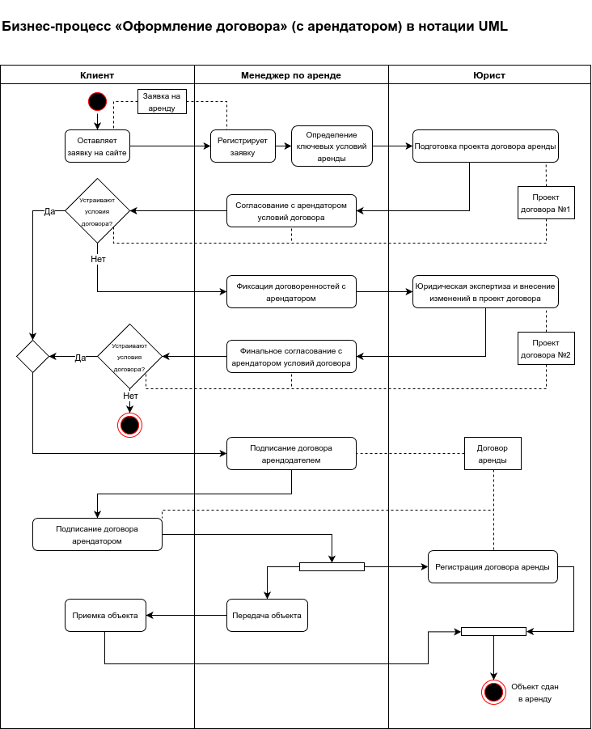

Задание: собрать в единую презентацию полный проект по оптимизации бизнес-процессов:
1. Перечислите основные и поддерживающие бизнес-процессы
2. Декомпозируйте процессы вашего отдела до 3-5 уровня
3. Опишите 1 важный процесс в одной из нотации (BPMN, UML)
4. Предложите инициативы по оптимизации бизнес-процессов (минимум 5)
5. Посчитайте экономический эффект от каждой инициативы
6. Приоритизируйте инициативы с помощью фреймворка RICE
7. Запланируйте проект (этапы, сроки, участники) по внедрению инициатив по оптимизации процессов
1. Перечислите основные и поддерживающие бизнес-процессы
Для компании, занимающейся сдачей недвижимости в аренду, бизнес-процессы можно разделить на основные (те, которые непосредственно связаны с основной деятельностью) и поддерживающие (вспомогательные процессы, которые обеспечивают работу основных).
Основные бизнес-процессы:
-
Поиск и привлечение арендаторов
- Рекламные кампании.
- Управление каналами продвижения объектов (онлайн-платформы, агентства).
- Организация показов недвижимости.
-
Оформление и заключение договора аренды
- Переговоры с потенциальными арендаторами.
- Подготовка и согласование условий аренды.
- Подготовка и подписание договора аренды.
- Юридическая проверка договора.
-
Управление арендаторами
- Контроль сроков платежей и аренды.
- Разрешение вопросов и конфликтов с арендаторами.
- Продление договоров аренды.
- Взаимодействие по техническим вопросам и запросам арендаторов (например, ремонт).
-
Управление недвижимостью
- Поддержка и ремонт объектов недвижимости.
- Управление техническим обслуживанием.
- Организация уборки и других сервисных услуг.
-
Мониторинг арендной платы и расчеты
- Выставление счетов и отслеживание платежей.
- Управление просроченной задолженностью.
- Ведение отчетности по платежам арендаторов.
-
Завершение аренды
- Освобождение объекта аренды.
- Осмотр и оценка состояния недвижимости после аренды.
- Возврат или удержание залога, если это предусмотрено договором.
- Подготовка недвижимости к новой аренде.
Поддерживающие (вспомогательные) бизнес-процессы:
-
Финансовый учет и отчетность
- Бухгалтерский учет всех доходов и расходов.
- Налоговый учет и отчетность.
- Финансовое планирование и контроль денежных потоков.
-
Управление персоналом
- Найм и обучение сотрудников (менеджеры по аренде, технические специалисты, бухгалтеры).
- Управление мотивацией и кадровый учет.
- Развитие корпоративной культуры.
-
Юридическая поддержка
- Юридическая проверка договоров аренды.
- Решение правовых споров с арендаторами.
- Юридическая консультация по вопросам недвижимости (например, регистрация договоров аренды).
-
Информационные технологии (IT)
- Поддержка и развитие CRM-системы для работы с арендаторами.
- Обеспечение работоспособности IT-инфраструктуры.
- Кибербезопасность и защита данных.
-
Маркетинг и продвижение
- Разработка рекламных стратегий и акций.
- Управление сайтами, социальными сетями и другими каналами для привлечения арендаторов.
- Анализ рынка аренды и конкурентной среды.
-
Управление рисками и страхование
- Управление рисками, связанными с недвижимостью и арендаторами.
- Страхование объектов недвижимости и аренды.
- Управление юридическими и финансовыми рисками.
-
Закупки и управление ресурсами
- Закупка материалов для ремонта и обслуживания объектов.
- Управление внешними подрядчиками (строительные компании, компании по уборке и ремонту).
- Ведение договоров с поставщиками.
2. Декомпозируйте процессы вашего отдела до 3-5 уровня

3. Опишите 1 важный процесс в одной из нотации (BPMN, UML)

4. Предложите инициативы по оптимизации бизнес-процессов (минимум 5)
Инициатива 1: Автоматизация подготовки стандартного договора
Инициатива 2: Внедрение электронной подписи
Инициатива 3: Автоматизация отправки и получения документов
Инициатива 4: Внедрение клиентского портала для арендаторов
Инициатива 5: Использование системы управления задачами (Task Management System)
5. Посчитайте экономический эффект от каждой инициативы
Инициатива 1: Автоматизация подготовки стандартного договора
Стоимость внедрения
- Внедрение CRM-системы с возможностью автоматической генерации договоров и подстановки данных — 200 000 рублей (разработка шаблонов, настройка, интеграция, обучение персонала).
- Поддержка и обслуживание системы (ежемесячные затраты): 10 000 рублей.
Экономический эффект
- Ежемесячная экономия: 60 000 рублей.
Окупаемость
Таким образом, автоматизация подготовки договора окупится за 3,3 месяца.
Инициатива 2: Внедрение электронной подписи
Стоимость внедрения
- Стоимость интеграции электронной подписи (подключение к сервисам ЭЦП, настройка, обучение персонала) — 100 000 рублей.
- Поддержка и обслуживание (ежемесячные затраты на использование ЭЦП): 5 000 рублей.
Экономический эффект
- Ежемесячная экономия: 6 000 рублей.
Окупаемость
Окупаемость данной инициативы составит около 16,7 месяцев.
Инициатива 3: Автоматизация отправки и получения документов
Стоимость внедрения
- Разработка и внедрение системы автоматической отправки документов (интеграция с почтовыми сервисами, настройка автоматических уведомлений и отправок) — 80 000 рублей.
- Поддержка и обслуживание (ежемесячные затраты на сервисы): 5 000 рублей.
Экономический эффект
- Ежемесячная экономия: 12 000 рублей.
Окупаемость
Окупаемость составит около 6,7 месяцев.
Инициатива 4: Внедрение клиентского портала для арендаторов
Описание
Создание онлайн-портала для клиентов (арендаторов), где они смогут самостоятельно управлять своими данными, просматривать договора и подписывать документы. Это решение существенно уменьшит количество ручной работы со стороны менеджеров и упростит взаимодействие с клиентами.
Преимущества
- Сокращение времени обработки запросов: Арендаторы могут сами вносить свои данные и подписывать договоры, что ускоряет процесс.
- Удобство для клиентов: Клиенты получают возможность отслеживать статус своих договоров, условия аренды и другую информацию в реальном времени.
- Уменьшение нагрузки на менеджеров по аренде: Менеджерам не придется вручную обновлять данные клиентов, отправлять договоры на подпись и следить за обновлениями.
Ожидаемое сокращение времени
- Менеджеры по аренде смогут сократить время работы с клиентами и документами на 25% (например, с 90 минут до 67,5 минут на один договор).
Экономический эффект
- Экономия времени менеджера по аренде:
Инициатива 5: Использование системы управления задачами (Task Management System)
Описание
Внедрение системы управления задачами, такой как Trello, Jira или Asana, для автоматизации распределения и отслеживания задач между участниками процесса (менеджерами, юристами, IT-специалистами). Это позволит автоматизировать распределение задач, улучшить контроль за сроками и повысить прозрачность процесса.
Преимущества
- Улучшение координации команды: Все участники процесса будут видеть текущие задачи, дедлайны и ответственных лиц.
- Снижение числа ошибок: Автоматическое напоминание о сроках и задачах позволит избежать задержек и ошибок, связанных с человеческим фактором.
- Повышение прозрачности: Руководство сможет легко отслеживать текущий статус каждой сделки и своевременно выявлять узкие места.
Ожидаемое сокращение времени
- За счет улучшения координации и автоматического отслеживания задач можно сократить 10% времени на весь процесс оформления договора (например, с 135 минут до 121,5 минуты на один договор).
Экономический эффект
- Экономия времени менеджера по аренде и юриста:
Итоговое сравнение инициатив по сроку окупаемости
| Инициатива | Стоимость внедрения (руб.) | Ежемесячная экономия (руб.) | Срок окупаемости (месяцев) |
|---|---|---|---|
| Автоматизация подготовки стандартного договора | 200 000 | 60 000 | 3.33 |
| Внедрение электронной подписи | 100 000 | 6 000 | 16.67 |
| Автоматизация отправки и получения документов | 80 000 | 12 000 | 6.67 |
Вывод
- Наиболее быстрая окупаемость у инициативы автоматизации подготовки стандартного договора (3,3 месяца). Это наиболее выгодное вложение в краткосрочной перспективе.
- Внедрение электронной подписи имеет наибольший срок окупаемости (16,7 месяцев), что связано с относительно небольшой экономией, но эта инициатива может повысить удобство и снизить количество ошибок при подписании договоров.
- Автоматизация отправки документов окупится за 6,7 месяцев, что также является разумным сроком для вложений такого рода.
6. Приоритизируйте инициативы с помощью фреймворка RICE
Фреймворк RICE (Reach, Impact, Confidence, Effort) позволяет оценить гипотезы и выбрать наиболее приоритетные, исходя из их влияния на бизнес и ресурсов, необходимых для реализации. Рассмотрим 3 инициативы с точки зрения RICE и проведем их оценку.
Пояснение к метрикам RICE
- Reach (Охват) – Сколько людей (или процессов) будет затронуто инициативой в определенный период времени (например, за месяц). Оценивается в количественном выражении.
- Impact (Влияние) – Ожидаемое влияние на ключевые показатели (например, рост дохода или экономия времени). Оценивается по шкале:
- 3 – сильное влияние,
- 2 – заметное влияние,
- 1 – среднее влияние,
- 0,5 – слабое влияние,
- 0,25 – минимальное влияние.
- Confidence (Уверенность) – Уровень уверенности в том, что инициатива принесет ожидаемые результаты. Оценивается в процентах (от 0 до 100%).
- Effort (Затраты усилий) – Количество человеко-месяцев или количество часов, необходимых для реализации инициативы.
Формула для расчета RICE:
Инициатива 1: Автоматизация подготовки стандартного договора
- Reach: 80 договоров в месяц.
- Impact: 2 (заметное влияние, так как сокращается значительная часть времени на подготовку договоров).
- Confidence: 80% (хорошо известные технологии, высокая вероятность успеха).
- Effort: 3 человеко-месяца на настройку системы и интеграцию.
Инициатива 2: Внедрение электронной подписи
- Reach: 80 договоров в месяц.
- Impact: 1 (среднее влияние, так как это больше удобство для клиентов и менеджеров).
- Confidence: 90% (технология внедрения ЭЦП хорошо проверена и широко используется).
- Effort: 2 человеко-месяца (на настройку и интеграцию сервиса ЭЦП).
Инициатива 3: Автоматизация отправки и получения документов
- Reach: 80 договоров в месяц.
- Impact: 1,5 (среднее влияние с тенденцией к заметному, так как ускоряет взаимодействие с клиентами и улучшает управление документами).
- Confidence: 85% (автоматизация рассылки – стандартный процесс, уверенность высокая).
- Effort: 2 человеко-месяца (на разработку автоматической системы рассылки).
Сравнение инициатив по RICE
| Инициатива | RICE Score |
|---|---|
| Автоматизация подготовки стандартного договора | 42.67 |
| Внедрение электронной подписи | 36 |
| Автоматизация отправки и получения документов | 51 |
Приоритетная инициатива
Согласно расчетам по фреймворку RICE, автоматизация отправки и получения документов является наиболее приоритетной инициативой с оценкой 51. Это связано с хорошим соотношением ожидаемого эффекта и затрат усилий на внедрение.
На втором месте находится автоматизация подготовки договора с оценкой 42.67, что также является важной инициативой, но потребует больше усилий по времени.
Внедрение электронной подписи с оценкой 36 занимает третье место и может быть реализовано как поддерживающая инициатива для улучшения удобства и ускорения процессов
7. План проекта (этапы, сроки, участники) по внедрению инициатив по оптимизации процессов
Рассмотрим проект по инициативе «Автоматизация подготовки стандартного договора» и построим timeline с конкретными задачами, сроками и участниками.
Общий срок проекта: 11 недель (2,5 месяца)
Участники проекта
- Бизнес-аналитик (БА): Анализ текущих процессов, формулирование требований, постановка задач и контроль сроков.
- Менеджер по аренде (МА): Представление требований от бизнеса, тестирование шаблонов.
- Юрист (Ю): Проверка юридической корректности шаблонов.
- Разработчик ПО (Разр): Разработка системы автоматизации, интеграция с CRM.
- IT-специалист (IT): Интеграция с существующими системами.
- Тестировщик (Тест): Проведение тестирования системы и выявление ошибок.
- Администратор системы (Адм): Поддержка и администрирование системы.
Этап 1: Оценка инициативы (1 неделя)
Задачи
-
Анализ текущих процессов подготовки договора:
- Описание: Изучение текущего процесса создания и оформления договора с арендатором.
- Ответственные: БА, МА, Ю
- Срок: 2 дня
-
Определение целей автоматизации и ключевых показателей:
- Описание: Определение целей проекта и ключевых метрик, по которым будет оцениваться успех (например, снижение времени на оформление договора, уменьшение ошибок).
- Ответственные: БА
- Срок: 1 день
-
Разработка дорожной карты проекта:
- Описание: Создание дорожной карты, охватывающей все этапы проекта, включая сроки и задачи.
- Ответственные: БА
- Срок: 2 дня
-
Оценка экономического эффекта:
- Описание: Расчет предполагаемой экономической выгоды от автоматизации.
- Ответственные: БА, Финансовый отдел
- Срок: 2 дня
Результат
- Полный анализ текущих процессов и цели проекта.
- Дорожная карта с основными этапами и оценка экономического эффекта.
Этап 2: Выбор подхода к реализации (1 неделя)
Задачи
-
Определение функциональных требований:
- Описание: Сбор и формулирование основных функциональных требований к системе автоматизации подготовки договоров.
- Ответственные: БА, МА, Ю
- Срок: 3 дня
-
Оценка возможных технических решений и выбор инструментов:
- Описание: Оценка вариантов систем автоматизации (например, использование готовых решений или разработка под ключ), выбор инструмента для автоматизации.
- Ответственные: БА, IT, Разр
- Срок: 2 дня
-
Формирование бюджета проекта:
- Описание: Расчет стоимости реализации, включая разработку, внедрение и поддержку.
- Ответственные: БА, Финансовый отдел
- Срок: 2 дня
Результат
- Сформулированные требования, выбранный технический подход и бюджет проекта.
Этап 3: Определение требований к решению (2 недели)
Задачи
-
Разработка детализированного технического задания (ТЗ):
- Описание: Разработка ТЗ на основе требований, которые будут использоваться для разработки решения.
- Ответственные: БА, IT, Разр
- Срок: 1 неделя
-
Подготовка технической документации:
- Описание: Составление технической документации для интеграции системы с CRM и другими платформами.
- Ответственные: IT, Разр
- Срок: 3 дня
-
Создание прототипа шаблона договора:
- Описание: Разработка прототипа автоматизированного шаблона договора, включающего основные поля для автоматического заполнения.
- Ответственные: Разр, Ю
- Срок: 1 неделя
Результат
- Полное техническое задание.
- Прототип шаблона договора.
Этап 4: Разработка и внедрение решения (4 недели)
Задачи
-
Разработка системы автоматизации:
- Описание: Написание программного обеспечения, позволяющего автоматически заполнять шаблоны договоров на основе данных из CRM.
- Ответственные: Разр
- Срок: 3 недели
-
Интеграция системы с CRM/ERP:
- Описание: Настройка интеграции с существующими системами для автоматического подтягивания данных.
- Ответственные: IT, Разр
- Срок: 2 недели
-
Внутреннее тестирование решения:
- Описание: Проведение тестирования функциональности системы на тестовых данных, проверка корректности работы и устранение багов.
- Ответственные: Тест, МА, Ю
- Срок: 2 недели (одновременно с интеграцией)
-
Актуализация проектной документации:
- Описание: Обновление документации на основе результатов тестирования и доработок.
- Ответственные: БА, IT
- Срок: 1 неделя (параллельно с тестированием)
Результат
- Разработанное и протестированное решение с интеграцией.
Этап 5: ОПЭ (Опытно-промышленная эксплуатация) (2 недели)
Задачи
-
Пилотное внедрение системы:
- Описание: Внедрение системы на ограниченную группу пользователей (например, на один офис или небольшую команду).
- Ответственные: IT, Разр, МА
- Срок: 1 неделя
-
Подготовка и проведение обучения сотрудников:
- Описание: Обучение ключевых сотрудников работе с новой системой и предоставление инструкций.
- Ответственные: МА, Адм
- Срок: 1 неделя
-
Тестирование на реальных данных и сбор отзывов:
- Описание: Тестирование системы на реальных данных и сбор обратной связи от пользователей.
- Ответственные: МА, Ю, Тест
- Срок: 1 неделя (одновременно с пилотным внедрением)
-
Устранение выявленных проблем:
- Описание: Устранение всех выявленных на этапе ОПЭ проблем и корректировка системы.
- Ответственные: Разр, IT
- Срок: 1 неделя
Результат
- Система внедрена на тестовой группе, собраны отзывы и исправлены ошибки.
Этап 6: Завершение проекта (1 неделя)
Задачи
-
Полное внедрение системы:
- Описание: Внедрение системы на всех пользователей компании.
- Ответственные: IT, Адм, Разр
- Срок: 3 дня
-
Передача материалов и документации:
- Описание: Передача всей документации, включая инструкции для пользователей, технические данные и описание новых процессов.
- Ответственные: БА, IT
- Срок: 2 дня
-
Мониторинг и поддержка работы системы:
- Описание: Запуск системы на полную мощность, мониторинг и поддержка.
- Ответственные: Адм, IT
- Срок: 2 дня
Результат
- Полноценная автоматизация подготовки договоров внедрена и работает, проект завершен.
Итоговый timeline проекта
| Этапы | Задачи | Сроки | Ответственные |
|---|---|---|---|
| 1. Оценка инициативы | Анализ, определение целей, расчет экономического эффекта | 1 неделя | БА, МА, Ю |
| 2. Выбор подхода к реализации | Определение функциональных требований, выбор решений, расчет бюджета | 1 неделя | БА, МА, Ю, IT |
| 3. Определение требований | Разработка ТЗ, создание прототипа шаблона | 2 недели | БА, Разр, Ю, IT |
| 4. Разработка и внедрение решения | Разработка системы, интеграция с CRM, тестирование, актуализация документации | 4 недели | Разр, IT, Тест, МА, Ю |
| 5. ОПЭ (Опытно-промышленная эксплуатация) | Пилотное внедрение, обучение сотрудников, тестирование на реальных данных и сбор отзывов | 2 недели | IT, Разр, МА, Адм, Ю, Тест |
| 6. Завершение проекта | Полное внедрение системы, передача документации, мониторинг и поддержка работы | 1 неделя | IT, Адм, БА, Разр |